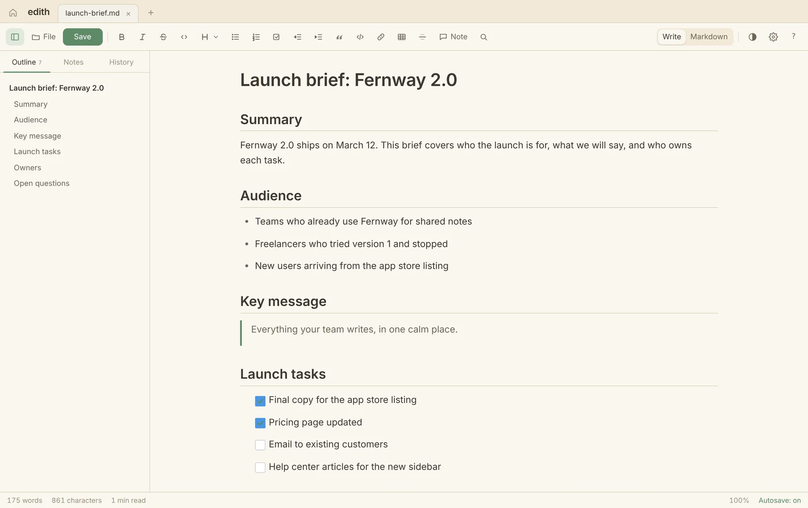
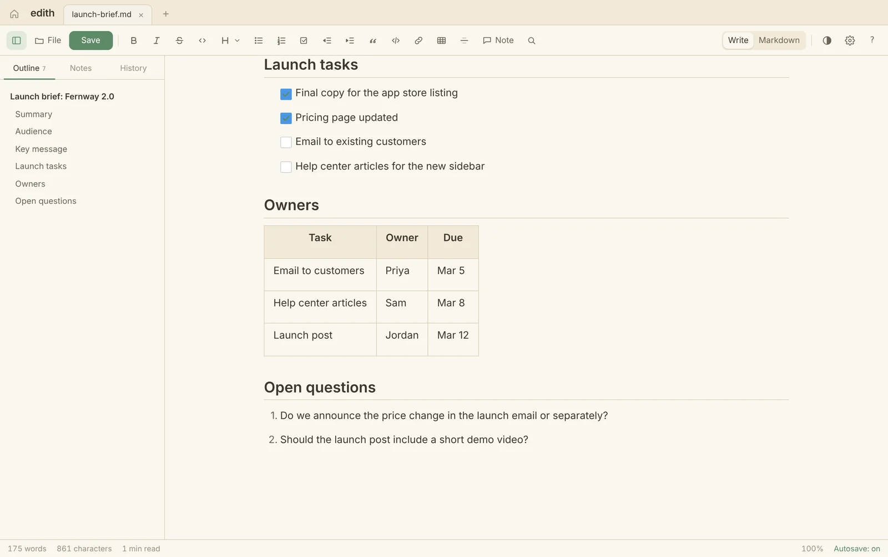
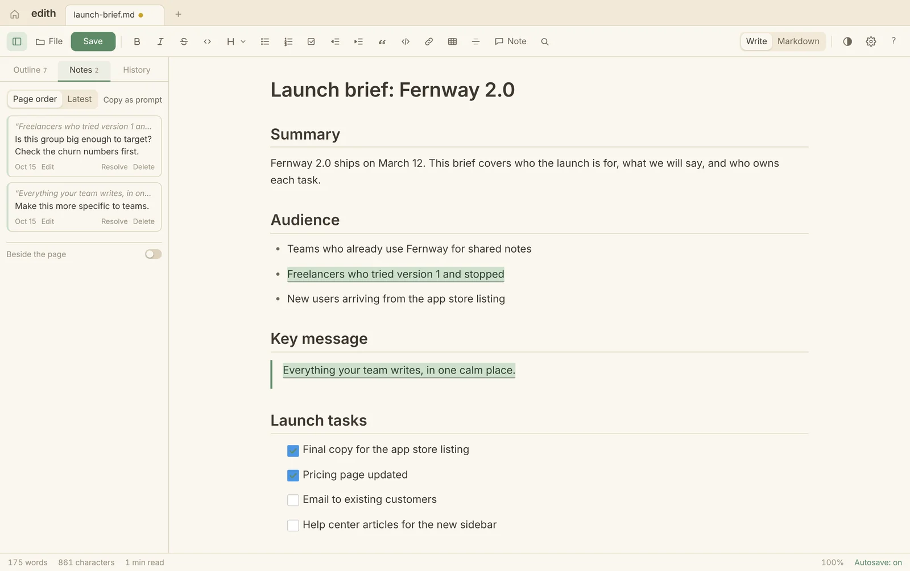
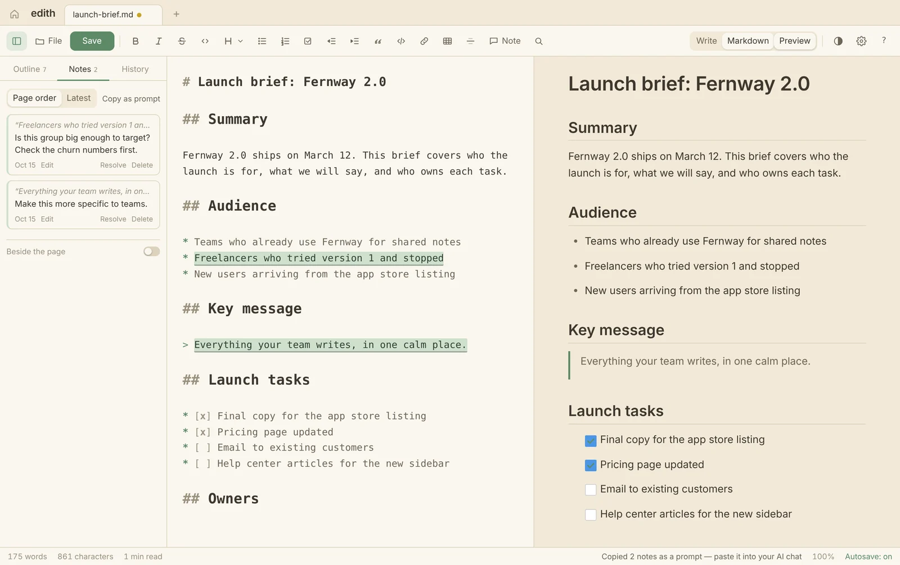
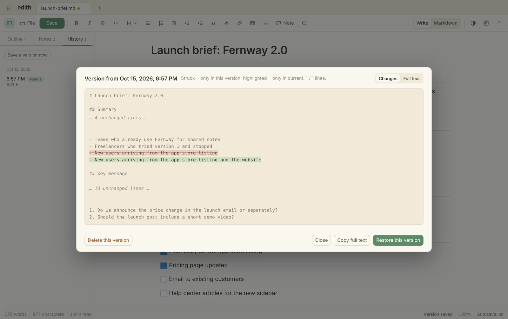

Tabs and Home
Keep several documents open. Home shows your recent files with a preview of each.
Edith opens the Markdown that AI tools, wikis and teammates hand you as a clean document. Edit it like any doc, and it saves back as plain Markdown.

Opens .md .txt Word PDF HTML RTF and saves clean Markdown.
Write
Headings, lists, checklists, tables and quotes appear the way they are meant to be read. Click and type.
The shortcuts you know from Google Docs work, and so does Markdown: type # for a heading or [ ] for a checkbox. Nothing to memorize.

Notes and AI
Select any passage and leave a note: an edit, a question, or "keep this". Then Copy as prompt turns every note into one clear message for ChatGPT, Claude or any AI chat.

I have left 2 notes on "launch-brief". Each one quotes the passage it points to, in the order they appear. Use your judgement on each note rather than treating them all as edit orders: - If it is a question, or asks for your opinion, answer it and explain your reasoning. Do not change that passage until I have read your answer and approved. - If it is a clear instruction, make the edit. - If I say a passage works, or to keep it, leave it exactly as it is. - If a note is ambiguous, or you disagree with it, tell me and say what you would do instead of guessing. Leave everything I have not commented on as it is. Number your replies to match mine. --- 1. Under "Audience": "Freelancers who tried version 1 and stopped" Is this group big enough to target? Check the churn numbers first. 2. Under "Key message": "Everything your team writes, in one calm place." Make this more specific to teams.
Notes are kept by Edith, not written into your file, so the Markdown stays clean wherever you send it.
Markdown
Switch to Markdown mode to see the source with a live preview beside it. Both views edit the same file, and Edith keeps your place when you switch.
Paste Markdown from an AI chat and it turns into formatting. Copy as Markdown sends it back out.

History
Edith saves versions as you work. Compare any version with the current text line by line, copy from it, or restore it.
Autosave writes into the same file. Unsaved work survives a crash. And if another app changes the file while it is open, Edith asks before overwriting.

And the details
Keep several documents open. Home shows your recent files with a preview of each.
Press ⇧⌘N to open whatever you copied as a document, tidy it, and copy it back.
Open a Word, PDF, HTML or RTF file and it is converted to Markdown on your Mac.
Every heading in the sidebar. Click one to jump straight there.
Matches highlight as you type, and Replace all undoes in one step.
⇧⌘F hides everything but the page.
Warm paper by default, Dusk for evenings, and five more.
Pasted images are saved in a folder beside your document, not crammed into the text.
Shortcuts for headings, lists, notes, versions and modes, with a cheat sheet on ⌘/.
Privacy
Edith is a local app. You decide what goes into an AI chat, because you paste it there yourself.
Edith makes one network request: it asks GitHub whether a newer version exists. Its fonts are built in, and pictures linked from the web are not loaded. It never installs anything by itself.
Download
New in 3.7: Undo now covers notes. Copy as prompt works with any AI chat. Switching between Write and Markdown is smooth. Full changelog
FAQ
Yes. No trial, no account, no subscription. It is open source under the MIT license; the code is on GitHub.
Macs with Apple Silicon (M1 or newer) running macOS 13 Ventura or later. Intel Macs are not supported.
Edith is not yet notarized by Apple, so macOS asks you to confirm the first time. Open System Settings → Privacy & Security and click Open Anyway. After that it opens like any other app.
It saves standard Markdown back into the same file. Notes are kept by Edith, not written into the file. If you want them in a file, use Save a .md Copy with Notes.
No. Opening, converting and editing all happen on your Mac. Edith's only network request is the update check, which asks GitHub whether a newer version exists. Images linked from the web are not loaded, so Edith never contacts other sites. Images stored on your Mac are shown.
Text, headings and lists convert well. PDF tables and images are not rebuilt, and scanned PDFs cannot be converted.
Edith checks for new versions when it opens and tells you when one is ready. Download it and run the installer again. Your settings, history and open tabs carry over.